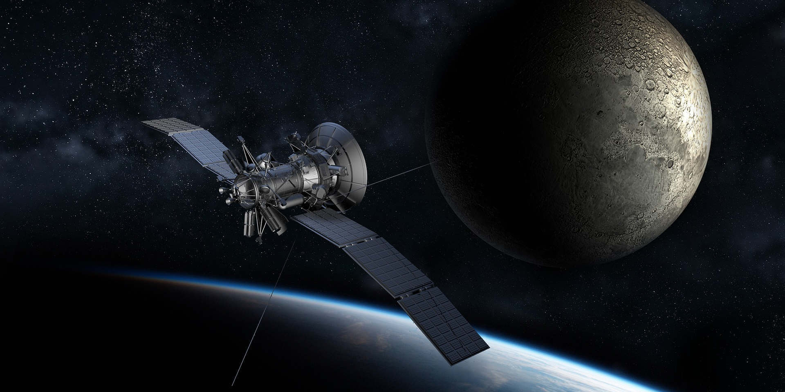
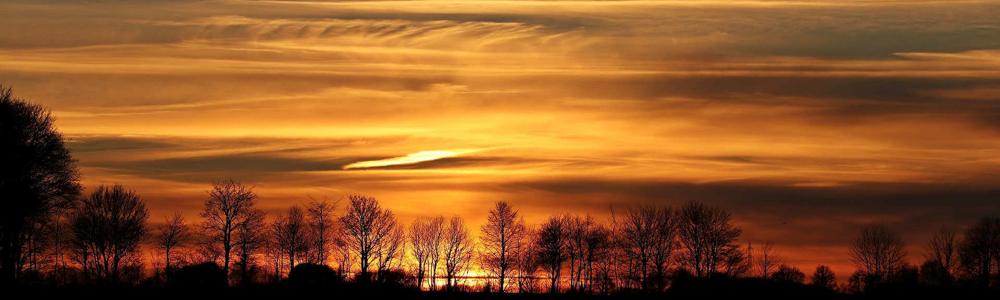

Earth: 10 Need-To-Know Things
-
1. Measuring Up
If the sun were as tall as a typical front door, Earth would be the size of a nickel.
-
2. Third Rock
Earth orbits our sun, a star. Earth is the third planet from the sun at a distance of about 93 million miles (150 million km). That's one Astronomical Unit (AU).
-
3. As the World Turns
A day on Earth is 24 hours (the time it takes the Earth to rotate or spin once). Earth makes a complete orbit around the sun (a year in Earth time) in about 365 days.
-
4. We're On It
Earth is a rocky planet, also known as a terrestrial planet, with a solid and dynamic surface of mountains, valleys, canyons, plains and much more. Earth is different from other terrestrial planets in our solar system because it has oceans. Most of our planet is covered in water.
-
5. Breathe Easy
Earth's atmosphere is 78 percent nitrogen (N2), 21 percent oxygen (O2) and 1 percent other ingredients - the perfect balance for Earthlings to breathe and live. Many planets in our solar system have atmospheres, but only Earth's is breathable.

-
6. Our Cosmic Companion
Earth has one moon. Another name for a moon is natural satellite.
-
7. Ringless
Earth has no rings.
-
8. Orbital Science
Many orbiting spacecraft study the Earth from above as a whole system.
-
9. Home, Sweet Home
Earth is the perfect place for life as we know it.

-
10. Protective Shield
Our atmosphere protects us from incoming meteoroids, most of which break up in our atmosphere before they can strike the surface as meteorites.